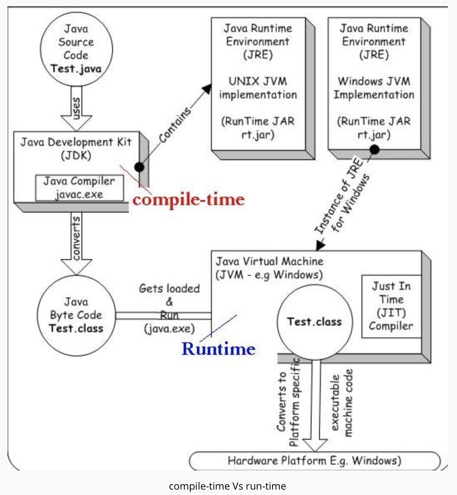

final :Final Class cannot be subclassedFinal methods cannot be overriddenFinal variables can occur at most once as a left-hand expression on an executed command- All methods in a final class are implicitly
final
finally Finally block in java can be used to put "cleanup" code such as closing a file, closing connection etc.- Java
finally block is always executed whether exception is handled or not. - This is used to close non-memory resources like file handles, sockets, database connections
static static members belong to the class instead of a specific instance.
-
default : Visible to the package. No modifiers are needed.- A variable or method declared without any access control modifier is available to any other class in the same package.
private : Visible to the class only- Methods, variables, and constructors that are declared
private can only be accessed within the declared class itself. Private access modifier is the most restrictive access level. Class and interfaces cannot be private.
- Methods, variables, and constructors that are declared
public : Visible to the world- A class, method, constructor, interface, etc. declared
public can be accessed from any other class.
- A class, method, constructor, interface, etc. declared
protected : Visible to the package and all subclasses- Variables, methods, and constructors, which are declared
protected in a superclass can be accessed only by the subclasses in other package or any class within the package of the protected members' class. - The protected access modifier cannot be applied to class and interfaces.
- Variables, methods, and constructors, which are declared

Wrapper classes are used to convert any data type into an object.
Autoboxing : Automatic conversion of primitive types to the object of their corresponding wrapper classes is known as autoboxing.Unboxing : Automatically converting an object of a wrapper class to its corresponding primitive type is known as unboxing.
Generics was added in Java 5 to provide compile-time type checking and removing risk of ClassCastException that was common while working with collection classes.
It provides compile time type-safety and ensures that you only insert correct Type in collection and avoids ClassCastException in runtime.
Example:
List list = new ArrayList();
list.add("1");
list.add("string");
String str = list.get(1);
System.out.println(str); // output: string
Generics for loop:
List strings = new ArrayList();
//... add String instances to the strings list...
for(String aString : strings){
System.out.println(aString);
}
What could happen at
- Syntax Errors
- Typechecking errors
- Running out of memory
- Division by zero
- Trying to open a file that isn't there

- Source file(.java)
- run source file through
Java Compiler (javac) . It checks for error and syntax in the source file. It transforms source file intobytecode . The bytecode is platform independent, because it's targeted at Java Virtual Machine. - Compiler creates
classfile . This classfile is coded into bytecode. The classfile isportable and can be ran on any platform. Java Virtual Machine runs the classfile. It is a specification that providesrun-time environment in which java bytecode can be executed.Java Runtime Environment (JRE) refers to a runtime environment in which java bytecode can be executed. It implements the JVM (Java Virtual Machine) and provides all the class libraries and other support files that JVM uses at runtime.Java Development Kit (JDK) a software development environment used for developing Java applications and applets. It includes the Java Runtime Environment (JRE), an interpreter/loader (java), a compiler (javac), an archiver (jar), a documentation generator (javadoc) and other tools needed in Java development.
The Java Classloader is a part of the Java Runtime Environment that dynamically loads Java classes into the Java Virtual Machine.